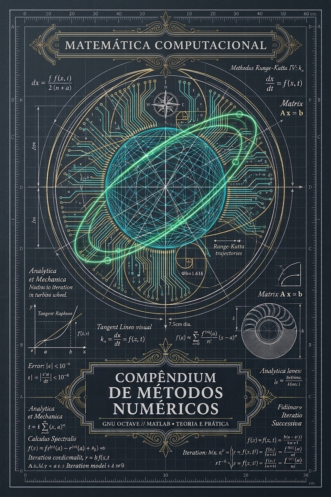

| #k | x_k | f(x_k) | f'(x_k) | x_{k+1} | |Δx| |
|---|

Esta capa une a geometria analítica do renascimento de Da Vinci à mandala de microprocessamento de silício. Representa a computação numérica como alquimia do cálculo moderno: convergência assintótica rigorosa, algoritmos IEEE-754 e ausência de dependências opacas.